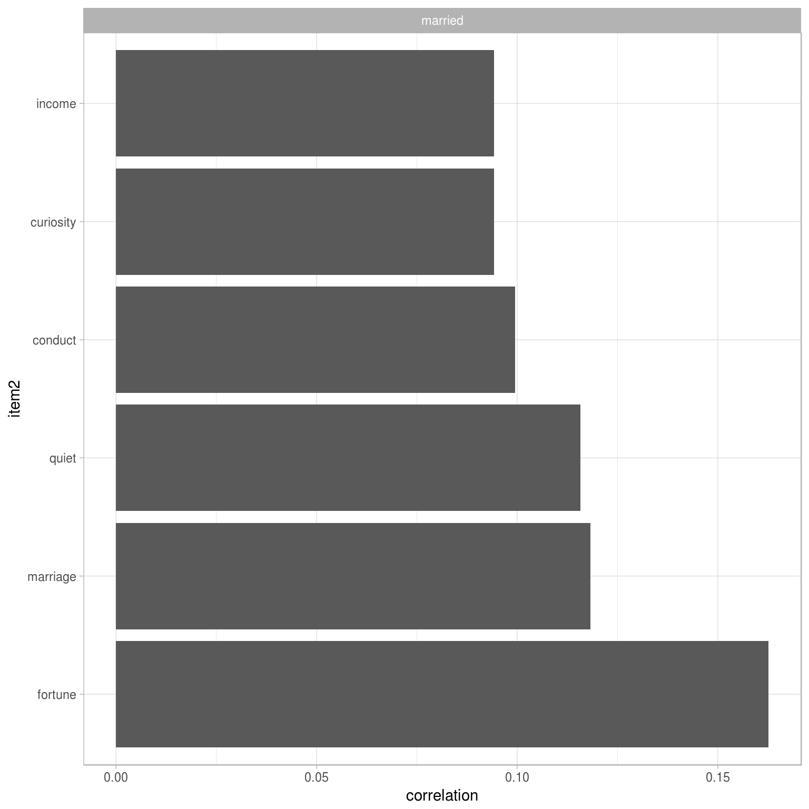

5 Working with combinations of words using n-grams and widyr
So far we’ve considered words as individual units, and connected them to documents or sentiments. However, many interesting text analyses are based on the relationships between words, whether examining words commonly used in proximity to each other or within the same documents.
Here, we’ll explore some of the tools tidytext offers for determining relationships between words in your text corpus. We’ll also introduce the widyr package, which is useful for calculating pairwise correlations and distances within a tidy format.
5.1 Tokenizing by n-gram
We’ve been using the unnest_tokens function to tokenize by word, or sometimes by sentence or paragraph. But we can also tokenize into consecutive sequences of words, called n-grams.
We do this by adding the token = "ngrams" option to unnest_tokens(), as well as the n argument. When we set n to 2, we are examining pairs of two words, often called bigrams:
library(dplyr)
library(tidytext)
library(janeaustenr)
austen_bigrams <- austen_books() %>%
unnest_tokens(bigram, text, token = "ngrams", n = 2)
austen_bigrams## # A tibble: 725,048 × 2
## book bigram
## <fctr> <chr>
## 1 Sense & Sensibility sense and
## 2 Sense & Sensibility and sensibility
## 3 Sense & Sensibility sensibility by
## 4 Sense & Sensibility by jane
## 5 Sense & Sensibility jane austen
## 6 Sense & Sensibility austen 1811
## 7 Sense & Sensibility 1811 chapter
## 8 Sense & Sensibility chapter 1
## 9 Sense & Sensibility 1 the
## 10 Sense & Sensibility the family
## # ... with 725,038 more rowsThis data structure is still a variation of the tidy text format. It is structured as one-row-per-token, but now each token represents a bigram. Notice that these bigrams are overlapping: “sense and” is one token, while “and sensibility” is another.
5.1.1 Counting and filtering n-grams
Our usual tidy tools apply equally well to n-gram analysis. We can examine the most common bigrams using count:
austen_bigrams %>%
count(bigram, sort = TRUE)## # A tibble: 211,237 × 2
## bigram n
## <chr> <int>
## 1 of the 3017
## 2 to be 2787
## 3 in the 2368
## 4 it was 1781
## 5 i am 1545
## 6 she had 1472
## 7 of her 1445
## 8 to the 1387
## 9 she was 1377
## 10 had been 1299
## # ... with 211,227 more rowsAs expected, a lot of them are pairs of common (relatively uninteresting) words. This is a useful time to use tidyr’s separate(), which splits a column into multiple based on a delimiter. This lets us separate it into two columns, “word1” and “word2”, which we can remove stop-words from individually:
library(tidyr)
bigrams_separated <- austen_bigrams %>%
separate(bigram, c("word1", "word2"), sep = " ")
bigrams_filtered <- bigrams_separated %>%
filter(!word1 %in% stop_words$word) %>%
filter(!word2 %in% stop_words$word)
bigrams_filtered## # A tibble: 44,784 × 3
## book word1 word2
## <fctr> <chr> <chr>
## 1 Sense & Sensibility jane austen
## 2 Sense & Sensibility austen 1811
## 3 Sense & Sensibility 1811 chapter
## 4 Sense & Sensibility chapter 1
## 5 Sense & Sensibility norland park
## 6 Sense & Sensibility surrounding acquaintance
## 7 Sense & Sensibility late owner
## 8 Sense & Sensibility advanced age
## 9 Sense & Sensibility constant companion
## 10 Sense & Sensibility happened ten
## # ... with 44,774 more rowsWe can now count the most common pairs of words:
bigrams_filtered %>%
count(word1, word2, sort = TRUE)## Source: local data frame [33,421 x 3]
## Groups: word1 [6,711]
##
## word1 word2 n
## <chr> <chr> <int>
## 1 sir thomas 287
## 2 miss crawford 215
## 3 captain wentworth 170
## 4 miss woodhouse 162
## 5 frank churchill 132
## 6 lady russell 118
## 7 lady bertram 114
## 8 sir walter 113
## 9 miss fairfax 109
## 10 colonel brandon 108
## # ... with 33,411 more rowsWe can see that names (whether first and last or with a salutation) are the most common pairs in Jane Austen books.
We may want to work with the recombined words. tidyr’s unite() function is the inverse of separate(), and lets us recombine the columns into one.
bigrams_united <- bigrams_filtered %>%
unite(bigram, word1, word2, sep = " ")
bigrams_united## # A tibble: 44,784 × 2
## book bigram
## * <fctr> <chr>
## 1 Sense & Sensibility jane austen
## 2 Sense & Sensibility austen 1811
## 3 Sense & Sensibility 1811 chapter
## 4 Sense & Sensibility chapter 1
## 5 Sense & Sensibility norland park
## 6 Sense & Sensibility surrounding acquaintance
## 7 Sense & Sensibility late owner
## 8 Sense & Sensibility advanced age
## 9 Sense & Sensibility constant companion
## 10 Sense & Sensibility happened ten
## # ... with 44,774 more rowsYou could also easily work with trigrams (sequences of 3 words) by setting n = 3:
austen_books() %>%
unnest_tokens(trigram, text, token = "ngrams", n = 3) %>%
separate(trigram, c("word1", "word2", "word3"), sep = " ") %>%
filter(!word1 %in% stop_words$word,
!word2 %in% stop_words$word,
!word3 %in% stop_words$word) %>%
count(word1, word2, word3, sort = TRUE)## Source: local data frame [8,757 x 4]
## Groups: word1, word2 [7,462]
##
## word1 word2 word3 n
## <chr> <chr> <chr> <int>
## 1 dear miss woodhouse 23
## 2 miss de bourgh 18
## 3 lady catherine de 14
## 4 catherine de bourgh 13
## 5 poor miss taylor 11
## 6 sir walter elliot 11
## 7 ten thousand pounds 11
## 8 dear sir thomas 10
## 9 twenty thousand pounds 8
## 10 replied miss crawford 7
## # ... with 8,747 more rows5.1.2 Analyzing bigrams
A bigram can be treated as a term in a document in the same way that we treated individual words. For example, we can look at tf-idf of bigrams:
bigram_tf_idf <- bigrams_united %>%
count(book, bigram) %>%
bind_tf_idf(bigram, book, n) %>%
arrange(desc(tf_idf))
bigram_tf_idf## Source: local data frame [36,217 x 6]
## Groups: book [6]
##
## book bigram n tf idf tf_idf
## <fctr> <chr> <int> <dbl> <dbl> <dbl>
## 1 Persuasion captain wentworth 170 0.02985599 1.791759 0.05349475
## 2 Mansfield Park sir thomas 287 0.02873160 1.791759 0.05148012
## 3 Mansfield Park miss crawford 215 0.02152368 1.791759 0.03856525
## 4 Persuasion lady russell 118 0.02072357 1.791759 0.03713165
## 5 Persuasion sir walter 113 0.01984545 1.791759 0.03555828
## 6 Emma miss woodhouse 162 0.01700966 1.791759 0.03047722
## 7 Northanger Abbey miss tilney 82 0.01594400 1.791759 0.02856782
## 8 Sense & Sensibility colonel brandon 108 0.01502086 1.791759 0.02691377
## 9 Emma frank churchill 132 0.01385972 1.791759 0.02483329
## 10 Pride & Prejudice lady catherine 100 0.01380453 1.791759 0.02473439
## # ... with 36,207 more rowsThis can be visualized within each book, just as we did for words:

Much as we discovered in Chapter 4, the units that distinguish each Austen book are almost exclusively names.
5.1.3 Using bigrams to provide context in sentiment analysis
Our sentiment analysis approch in Chapter 3 simply counted the appearance of positive or negative words, according to a reference lexicon. One of the problems with this approach is that a word’s context can matter nearly as much as its presence. For example, the words “happy” and “like” will be counted as positive, even in a sentence like “I’m not happy and I don’t like it!”
bigrams_separated %>%
filter(word1 == "not") %>%
count(word1, word2, sort = TRUE)## Source: local data frame [1,246 x 3]
## Groups: word1 [1]
##
## word1 word2 n
## <chr> <chr> <int>
## 1 not be 610
## 2 not to 355
## 3 not have 327
## 4 not know 252
## 5 not a 189
## 6 not think 176
## 7 not been 160
## 8 not the 147
## 9 not at 129
## 10 not in 118
## # ... with 1,236 more rowsBy performing sentiment analysis on the bigram data, we can examine how often sentiment-associated words are preceded by “not” or other negating words. We could use this to ignore or even reverse their contribution to the sentiment score.
Let’s use the AFINN lexicon for sentiment analysis, which gives a numeric sentiment score for each word:
AFINN <- get_sentiments("afinn")
AFINN## # A tibble: 2,476 × 2
## word score
## <chr> <int>
## 1 abandon -2
## 2 abandoned -2
## 3 abandons -2
## 4 abducted -2
## 5 abduction -2
## 6 abductions -2
## 7 abhor -3
## 8 abhorred -3
## 9 abhorrent -3
## 10 abhors -3
## # ... with 2,466 more rowsWe can then examine the most frequent words that were preceded by “not” and were associated with a sentiment.
not_words <- bigrams_separated %>%
filter(word1 == "not") %>%
inner_join(AFINN, by = c(word2 = "word")) %>%
count(word2, score, sort = TRUE) %>%
ungroup()
not_words## # A tibble: 245 × 3
## word2 score n
## <chr> <int> <int>
## 1 like 2 99
## 2 help 2 82
## 3 want 1 45
## 4 wish 1 39
## 5 allow 1 36
## 6 care 2 23
## 7 sorry -1 21
## 8 leave -1 18
## 9 pretend -1 18
## 10 worth 2 17
## # ... with 235 more rowsIt’s worth asking which words contributed the most in the “wrong” direction. To compute that, we can multiply their score by the number of times they appear (so that a word with a sentiment score of +3 occurring 10 times has as much impact as a word with a sentiment score of +1 occurring 30 times).
not_words %>%
mutate(contribution = n * score) %>%
arrange(desc(abs(contribution))) %>%
head(20) %>%
mutate(word2 = reorder(word2, contribution)) %>%
ggplot(aes(word2, n * score, fill = n * score > 0)) +
geom_bar(stat = "identity", show.legend = FALSE) +
ylab("Words preceded by \"not\"") +
xlab("Sentiment score * # of occurrences") +
coord_flip()
The bigrams “not like” and “not help” were overwhelmingly the largest causes of misidentification, making the text seem much more positive than it is. But we can see phrases like “not afraid” and “not fail” sometimes suggest text is more negative than it is.
“Not” isn’t the only word that provides context. We could make a vector of words that we suspect are used in negation, and use the same joining and counting approach to examine all of them at once.
negation_words <- c("not", "no", "never", "without")
negated_words <- bigrams_separated %>%
filter(word1 %in% negation_words) %>%
inner_join(AFINN, by = c(word2 = "word")) %>%
count(word1, word2, score, sort = TRUE) %>%
ungroup()
negated_words## # A tibble: 531 × 4
## word1 word2 score n
## <chr> <chr> <int> <int>
## 1 no doubt -1 102
## 2 not like 2 99
## 3 not help 2 82
## 4 no no -1 60
## 5 not want 1 45
## 6 not wish 1 39
## 7 not allow 1 36
## 8 not care 2 23
## 9 no harm -2 22
## 10 not sorry -1 21
## # ... with 521 more rows## TODO: make the ordering vary depending on each facet
## (not easy to fix)
negated_words %>%
mutate(contribution = n * score) %>%
mutate(word2 = reorder(word2, contribution)) %>%
group_by(word1) %>%
top_n(10, abs(contribution)) %>%
ggplot(aes(word2, contribution, fill = n * score > 0)) +
geom_bar(stat = "identity", show.legend = FALSE) +
facet_wrap(~ word1, scales = "free") +
xlab("Words preceded by negation") +
ylab("Sentiment score * # of occurrences") +
coord_flip()
5.1.4 Visualizing a network of bigrams with igraph
We may be interested in visualizing all of the relationships among words simultaneously, rather than just the top few at a time.
bigram_counts <- bigrams_filtered %>%
count(word1, word2, sort = TRUE)
bigram_counts## Source: local data frame [33,421 x 3]
## Groups: word1 [6,711]
##
## word1 word2 n
## <chr> <chr> <int>
## 1 sir thomas 287
## 2 miss crawford 215
## 3 captain wentworth 170
## 4 miss woodhouse 162
## 5 frank churchill 132
## 6 lady russell 118
## 7 lady bertram 114
## 8 sir walter 113
## 9 miss fairfax 109
## 10 colonel brandon 108
## # ... with 33,411 more rowsAs one powerful visualization, we can arrange the words into a network, or “graph.” Here we’ll be referring to a “graph” not in the sense of a visualization, but as a combination of connected nodes. A graph can be created from a tidy object because a graph has three variables:
- from: the node an edge is coming from
- to: the node an edge is going towards
- weight A numeric value associated with each edge
The igraph package has many powerful functions for manipulating and analyzing networks. The most typical way to create an igraph object from tidy data is the graph_from_data_frame() function.
library(igraph)
# filter for only relatively common combinations
bigram_graph <- bigram_counts %>%
filter(n > 20) %>%
graph_from_data_frame()
bigram_graph## IGRAPH DN-- 91 77 --
## + attr: name (v/c), n (e/n)
## + edges (vertex names):
## [1] sir ->thomas miss ->crawford captain ->wentworth miss ->woodhouse
## [5] frank ->churchill lady ->russell lady ->bertram sir ->walter
## [9] miss ->fairfax colonel ->brandon miss ->bates lady ->catherine
## [13] sir ->john jane ->fairfax miss ->tilney lady ->middleton
## [17] miss ->bingley thousand->pounds miss ->dashwood miss ->bennet
## [21] john ->knightley miss ->morland captain ->benwick dear ->miss
## [25] miss ->smith miss ->crawford's henry ->crawford miss ->elliot
## [29] dr ->grant miss ->bertram sir ->thomas's ten ->minutes
## + ... omitted several edgesigraph has plotting functions built in, but they’re not what the package is designed to do. Many others have developed visualization methods for graphs. We recommend the ggraph package, because it implements these visualizations in terms of the grammar of graphics, which we are already familiar with from ggplot2.
We can convert an igraph object into a ggraph with the ggraph function, after which we add layers to it, much like layers are added in ggplot2. For example, here we add nodes, edges, and text to construct the basics of a graph:
library(ggraph)
set.seed(2016)
ggraph(bigram_graph, layout = "fr") +
geom_edge_link() +
geom_node_point() +
geom_node_text(aes(label = name), vjust = 1, hjust = 1)
We now see more details of the network structure. For example, we see that salutations such as “miss”, “lady”, “sir”, “and”colonel" form common centers of nodes, which are often followed by names. We also see pairs or triplets along the outside that form common short phrases (“half hour,” “ten minutes”, “thousand pounds”).
As a few polishing operations:
- We add the
edge_alphaaesthetic to the link layer to make links transparent based on how common or rare the bigram is - We add directionality with an arrow, constructed using
grid::arrow() - We tinker with the options to the node layer to make the nodes more attractive (larger, blue points)
- We add a theme that’s useful for plotting networks,
theme_void()
set.seed(2016)
a <- grid::arrow(type = "closed", length = unit(.15, "inches"))
ggraph(bigram_graph, layout = "fr") +
geom_edge_link(aes(edge_alpha = n), show.legend = FALSE, arrow = a) +
geom_node_point(color = "lightblue", size = 5) +
geom_node_text(aes(label = name), vjust = 1, hjust = 1) +
theme_void()
It may take a some experimentation with ggraph to get your networks into a presentable format like this, but the network structure is useful and flexible way to visualize relational tidy data.
5.1.5 Visualizing bigrams in other texts
We went to a good amount of work in cleaning and visualizing bigrams on a text dataset. So let’s collect it into a function so that we can do it on other text datasets easily.
count_bigrams <- function(dataset) {
dataset %>%
unnest_tokens(bigram, text, token = "ngrams", n = 2) %>%
separate(bigram, c("word1", "word2"), sep = " ") %>%
filter(!word1 %in% stop_words$word) %>%
filter(!word2 %in% stop_words$word) %>%
count(word1, word2, sort = TRUE)
}
visualize_bigrams <- function(bigrams) {
set.seed(2016)
bigrams %>%
graph_from_data_frame() %>%
ggraph(layout = "fr") +
geom_edge_link(aes(edge_alpha = n), show.legend = FALSE, arrow = a) +
geom_node_point(color = "lightblue", size = 5) +
geom_node_text(aes(label = name), vjust = 1, hjust = 1) +
theme_void()
}At this point, we could visualize bigrams in other works, such as the King James Version of the Bible:
# The King James version is book 10 on Project Gutenberg:
library(gutenbergr)
kjv <- gutenberg_download(10)library(stringr)
kjv_bigrams <- kjv %>%
count_bigrams()
kjv_bigrams## Source: local data frame [47,551 x 3]
## Groups: word1 [7,265]
##
## word1 word2 n
## <chr> <chr> <int>
## 1 thou shalt 1250
## 2 thou hast 768
## 3 lord god 546
## 4 thy god 356
## 5 thou art 320
## 6 lord thy 316
## 7 lord hath 291
## 8 shalt thou 258
## 9 jesus christ 196
## 10 burnt offering 184
## # ... with 47,541 more rows# filter out rare combinations, as well as digits
set.seed(2016)
kjv_bigrams %>%
filter(n > 40,
!str_detect(word1, "\\d"),
!str_detect(word2, "\\d")) %>%
visualize_bigrams()
TODO: Description of bible network
5.2 Counting and correlating pairs of words with the widyr package
Tokenizing by n-gram is a useful way to explore pairs of adjacent words. However, we may also be interested in words that tend to co-occur within particular documents or particular chapters.
Tidy data is a useful structure for comparing between variables or grouping by rows, but it can be challenging to compare between rows: for example, to count the number of times that two words appear within the same document.
This is provided by the widyr package, which focuses on encapsulating the pattern of “widen data, perform an operation, then re-tidy data.”

The philosophy behind the widyr package, which can operations such as counting and correlating on pairs of values in a tidy dataset.
This makes certain operations for comparing words much easier. We’ll focus on a set of functions that make pairwise comparisons between groups of observations (for example, between documents, or sections).
5.2.1 Counting and correlating among sections
Consider the book “Pride and Prejudice” divided into 10-line sections, as we did for sentiment analysis in Chapter 3. We may be interested in what words tend to appear within the same section.
austen_section_words <- austen_books() %>%
filter(book == "Pride & Prejudice") %>%
mutate(section = row_number() %/% 10) %>%
filter(section > 0) %>%
unnest_tokens(word, text) %>%
filter(!word %in% stop_words$word)
austen_section_words## # A tibble: 37,240 × 3
## book section word
## <fctr> <dbl> <chr>
## 1 Pride & Prejudice 1 truth
## 2 Pride & Prejudice 1 universally
## 3 Pride & Prejudice 1 acknowledged
## 4 Pride & Prejudice 1 single
## 5 Pride & Prejudice 1 possession
## 6 Pride & Prejudice 1 fortune
## 7 Pride & Prejudice 1 wife
## 8 Pride & Prejudice 1 feelings
## 9 Pride & Prejudice 1 views
## 10 Pride & Prejudice 1 entering
## # ... with 37,230 more rowsOne example of the widyr pattern is the pairwise_count function. The prefix “pairwise” means it will result in one row for each pair of words in the word variable. This lets us count common pairs of words co-appearing within the same section:
library(widyr)
# count words co-occuring within sections
word_pairs <- austen_section_words %>%
pairwise_count(word, section, sort = TRUE)
word_pairs## # A tibble: 796,008 × 3
## item1 item2 n
## <chr> <chr> <dbl>
## 1 darcy elizabeth 144
## 2 elizabeth darcy 144
## 3 miss elizabeth 110
## 4 elizabeth miss 110
## 5 elizabeth jane 106
## 6 jane elizabeth 106
## 7 miss darcy 92
## 8 darcy miss 92
## 9 elizabeth bingley 91
## 10 bingley elizabeth 91
## # ... with 795,998 more rowsFor example, we discover that the most common pair of words in a section is “Elizabeth” and “Darcy” (the two main characters).
word_pairs %>%
filter(item1 == "darcy")## # A tibble: 2,930 × 3
## item1 item2 n
## <chr> <chr> <dbl>
## 1 darcy elizabeth 144
## 2 darcy miss 92
## 3 darcy bingley 86
## 4 darcy jane 46
## 5 darcy bennet 45
## 6 darcy sister 45
## 7 darcy time 41
## 8 darcy lady 38
## 9 darcy friend 37
## 10 darcy wickham 37
## # ... with 2,920 more rows5.2.2 Pairwise correlation
Pairs like “Elizabeth” and “Darcy” are the most common co-occurring words, but that’s not particularly meaningful since they’re also the most common words. We instead want to examine correlation among words, which is how often they appear together relative to how often they appear separately.
TODO: formula for Pearson correlation, explanation of phi coefficient
The pairwise_cor() function in widyr lets us perform a Pearson correlation between words based on how often they appear in the same section.
library(widyr)
# We need to filter for at least relatively common words first
word_cors <- austen_section_words %>%
group_by(word) %>%
filter(n() >= 20) %>%
pairwise_cor(word, section, sort = TRUE)
word_cors## # A tibble: 154,842 × 3
## item1 item2 correlation
## <chr> <chr> <dbl>
## 1 bourgh de 0.9508501
## 2 de bourgh 0.9508501
## 3 pounds thousand 0.7005808
## 4 thousand pounds 0.7005808
## 5 william sir 0.6644719
## 6 sir william 0.6644719
## 7 catherine lady 0.6633048
## 8 lady catherine 0.6633048
## 9 forster colonel 0.6220950
## 10 colonel forster 0.6220950
## # ... with 154,832 more rowsFor instance, we could find the words most correlated with a word like “pounds” by filtering:
word_cors %>%
filter(item1 == "pounds")## # A tibble: 393 × 3
## item1 item2 correlation
## <chr> <chr> <dbl>
## 1 pounds thousand 0.70058081
## 2 pounds ten 0.23057580
## 3 pounds fortune 0.16386264
## 4 pounds settled 0.14946049
## 5 pounds wickham's 0.14152401
## 6 pounds children 0.12900011
## 7 pounds mother's 0.11905928
## 8 pounds believed 0.09321518
## 9 pounds estate 0.08896876
## 10 pounds ready 0.08597038
## # ... with 383 more rowsThis would let us examine the most-correlated words with any selection of words:
word_cors %>%
filter(item1 %in% c("elizabeth", "pounds", "married", "pride")) %>%
group_by(item1) %>%
top_n(6) %>%
mutate(item2 = reorder(item2, correlation)) %>%
ggplot(aes(item2, correlation)) +
geom_bar(stat = "identity") +
facet_wrap(~ item1, scales = "free") +
coord_flip()
Just as we used ggraph to visualize bigrams, we can use it to visualize the correlations and clusters of words that were found by the widyr package.
set.seed(2016)
word_cors %>%
filter(correlation > .15) %>%
graph_from_data_frame() %>%
ggraph(layout = "fr") +
geom_edge_link(aes(edge_alpha = correlation), show.legend = FALSE) +
geom_node_point(color = "lightblue", size = 5) +
geom_node_text(aes(label = name), repel = TRUE) +
theme_void()
Note that unlike the bigram analysis, the relationships here are symmetric, rather than directional. We can also see that while pairings of names and titles that dominated bigram pairings are common, such as “colonel/fitzwilliam”, we can also see pairings of words that appear close to each other, such as “walk” and “park”.
These network visualizations are a flexible tool for exploring relationships, and will play an important role in the case studies in later chapters.